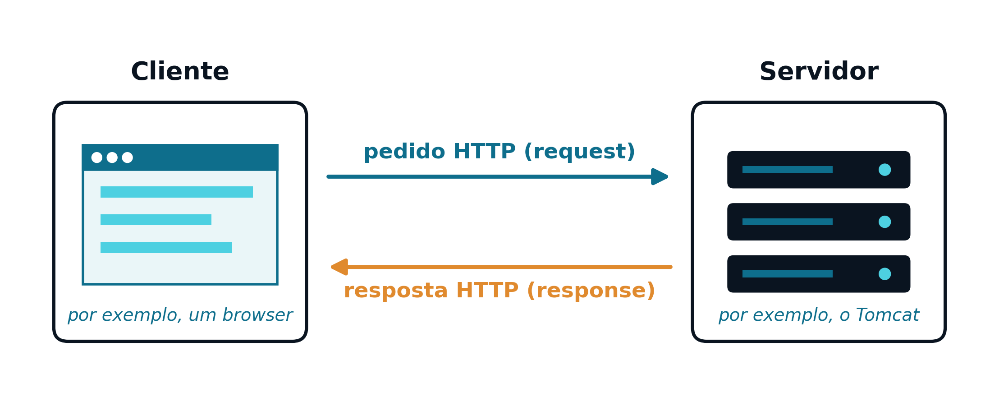
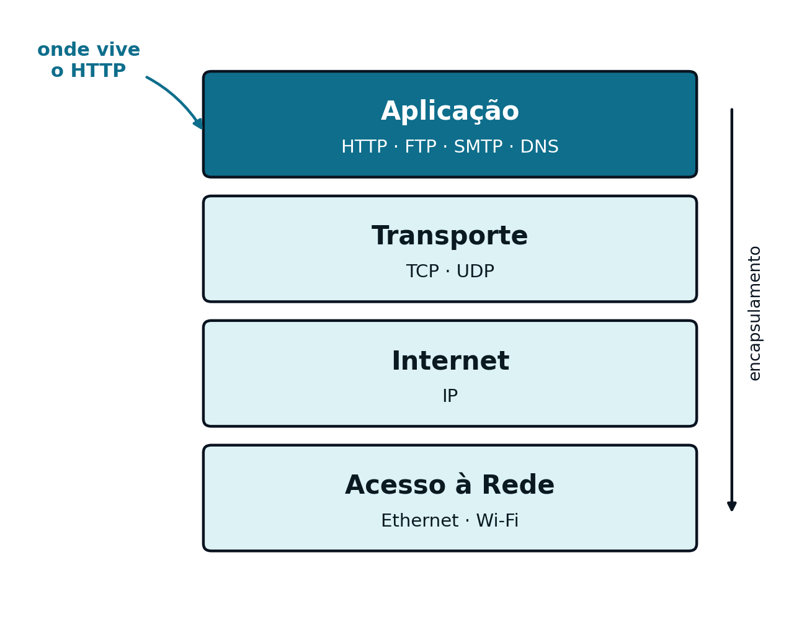
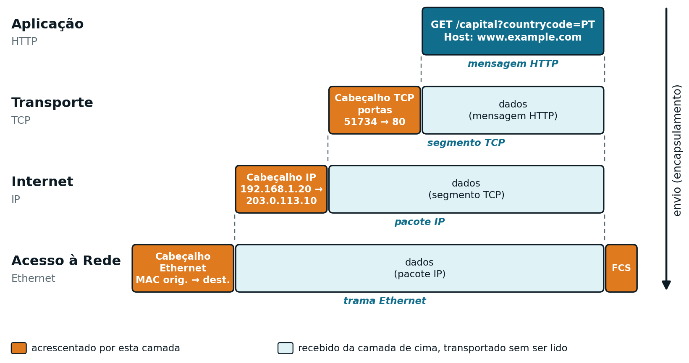
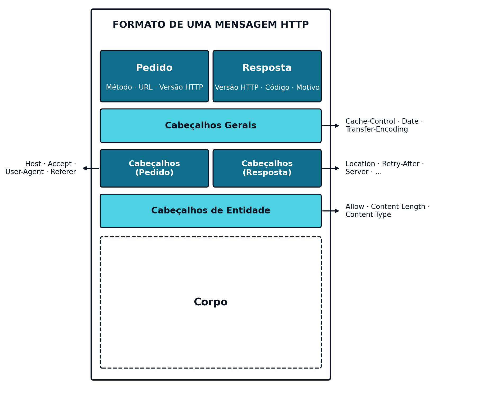
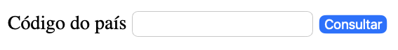
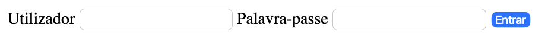

3 O Protocolo HTTP
3.1 O Middleware que Liga Frontend e Backend
O Capítulo 1 identificou três componentes em qualquer aplicação Web: Frontend, Middleware e Backend. O Capítulo 2 dedicou-se à primeira, um conjunto de páginas HTML com formulários, entre eles o de consulta de capital (capital.html) e o de autenticação (login.html). Esses formulários, por si só, não fazem nada: precisam de um protocolo que leve os dados que o utilizador preenche até um servidor, e que traga de volta uma resposta. Esse protocolo, o Middleware usado nas aplicações web, é o HTTP (HyperText Transfer Protocol).
O HTTP, no entanto, não trabalha sozinho. Para que um pedido saia do browser e chegue a um servidor, possivelmente do outro lado do mundo, o HTTP apoia-se em dois outros protocolos: o TCP, que entrega os dados à aplicação certa, e o IP, que os faz chegar à máquina certa. Este capítulo percorre esse caminho por ordem: parte do modelo cliente-servidor, desce às camadas de transporte e de rede para mostrar onde entram as portas e os endereços IP, e só depois detalha o funcionamento do HTTP.
3.2 O Modelo Cliente-Servidor
Toda a comunicação na web assenta no modelo cliente-servidor. Neste modelo há dois papéis bem distintos:
- Servidor
- Um programa que está permanentemente à escuta, à espera de pedidos. Não toma a iniciativa de contactar ninguém: limita-se a responder a quem o contacta. Um mesmo servidor atende, em simultâneo, pedidos de muitos clientes diferentes. Nesta UC, o servidor é o Apache Tomcat.
- Cliente
-
Um programa que toma a iniciativa da comunicação: envia um pedido ao servidor e aguarda a resposta. Na web, o cliente é tipicamente um browser (Chrome, Firefox, Safari), mas pode ser qualquer programa capaz de enviar pedidos, como o
curlna linha de comandos ou uma aplicação móvel.

A interação é sempre a mesma: o cliente envia um pedido (request), o servidor processa-o e devolve uma resposta (response). Este par pedido-resposta é a unidade básica de toda a comunicação na web: carregar uma página, submeter um formulário ou obter uma imagem são, cada um, uma ou mais destas trocas.
Para que esta troca aconteça, o cliente precisa de responder a duas perguntas antes de enviar o que quer que seja:
- Em que máquina está o servidor? A resposta é um endereço IP, tratado pela camada Internet.
- Que programa, dentro dessa máquina, deve receber o pedido? Uma mesma máquina pode ter vários servidores a correr ao mesmo tempo (um servidor web, um servidor de base de dados, um servidor de correio). A resposta é um número de porta, tratado pela camada de Transporte.
Só depois de resolvidas estas duas questões entra o HTTP, que define o que se diz: o formato do pedido e da resposta. As secções seguintes explicam como é que as três peças se organizam.
3.3 O Modelo TCP/IP
As comunicações em rede organizam-se em camadas. Cada camada presta um serviço à camada imediatamente acima e usa os serviços da camada imediatamente abaixo, sem precisar de saber como é que essas outras camadas funcionam por dentro. O modelo TCP/IP, usado na Internet, organiza a pilha de comunicações em quatro camadas:
| Camada | Responsabilidade | Endereçamento | Exemplos de protocolos |
|---|---|---|---|
| Aplicação | O formato dos dados trocados entre aplicações | URL | HTTP, FTP, SMTP, DNS |
| Transporte | Entrega dos dados ao processo certo, de forma fiável (TCP) ou não (UDP) | Porta | TCP, UDP |
| Internet | Encaminhamento dos dados entre redes, até à máquina certa | Endereço IP | IP |
| Acesso à Rede | Transmissão física dos dados no meio local | Endereço MAC | Ethernet, Wi-Fi |

3.3.1 Encapsulamento
Quando o browser envia um pedido, os dados descem a pilha, da camada de Aplicação até à camada de Acesso à Rede. Em cada camada é acrescentado um cabeçalho próprio, com a informação de que essa camada precisa. A este processo chama-se encapsulamento (Figura 3.3):
- Aplicação: o browser constrói a mensagem HTTP (por exemplo,
GET /capital?countrycode=PT). Estes dados, do ponto de vista das camadas inferiores, são apenas a carga útil (payload). - Transporte: o TCP acrescenta um cabeçalho cuja informação mais importante são as portas de origem e de destino. O resultado chama-se segmento TCP.
- Internet: o IP acrescenta um cabeçalho cuja informação mais importante são os endereços IP de origem e de destino. O resultado chama-se pacote IP.
- Acesso à Rede: a placa de rede acrescenta um cabeçalho com os endereços físicos (MAC) e, no fim, um código de verificação (FCS, Frame Check Sequence) que permite ao recetor detetar se a trama foi corrompida pelo caminho. O resultado chama-se trama (frame), que é depois convertida em sinais elétricos, óticos ou rádio.

Na receção, o processo inverte-se: cada camada verifica o cabeçalho que lhe diz respeito, retira-o e entrega o resto à camada de cima. A camada Internet confirma que o endereço IP de destino é o da máquina; a camada de Transporte verifica se há alguma aplicação registada na porta de destino e, em caso afirmativo, entrega-lhe os dados; a camada de Aplicação, por fim, recebe a mensagem HTTP tal como o browser a escreveu.
O HTTP é, portanto, um protocolo da camada de Aplicação: não se preocupa em saber como é que os dados chegam ao destino, apenas define o formato do pedido e da resposta. Essa entrega fica a cargo das camadas inferiores, das quais as duas mais relevantes para o desenvolvimento web são descritas a seguir.
3.4 A Camada de Transporte: o TCP e as Portas
3.4.1 As Portas
Um endereço IP identifica uma máquina, mas numa máquina correm muitos programas ao mesmo tempo. A porta é o número que identifica, dentro de uma máquina, o programa a que os dados se destinam. Quando um servidor arranca, regista-se numa porta e fica à escuta: todos os segmentos TCP que chegam com essa porta de destino são-lhe entregues.
As portas são números inteiros entre 0 e 65535, divididos em três gamas:
| Gama | Designação | Utilização |
|---|---|---|
| 0 a 1023 | Portas bem conhecidas (well-known ports) | Reservadas a serviços normalizados |
| 1024 a 49151 | Portas registadas (registered ports) | Atribuídas a aplicações específicas |
| 49152 a 65535 | Portas dinâmicas (ephemeral ports) | Atribuídas temporariamente aos clientes |
Algumas portas surgem com particular frequência:
| Porta | Serviço |
|---|---|
| 21 | FTP (transferência de ficheiros) |
| 22 | SSH (acesso remoto seguro) |
| 25 | SMTP (envio de correio eletrónico) |
| 53 | DNS (resolução de nomes) |
| 80 | HTTP |
| 443 | HTTPS (HTTP cifrado) |
| 3306 | MySQL / MariaDB |
| 8080 | HTTP alternativo (porta por omissão do Apache Tomcat) |
Quando a porta de destino é a bem conhecida do protocolo, não é preciso escrevê-la no URL: http://www.utad.pt e http://www.utad.pt:80 são exatamente o mesmo endereço, porque o browser assume a porta 80 para http e a porta 443 para https. Já o Tomcat, que por omissão escuta na porta 8080, obriga a indicá-la explicitamente, e é por isso que todos os endereços usados nesta UC têm a forma http://localhost:8080/....
O cliente também usa uma porta: a porta de origem. Essa não é escolhida pelo utilizador, é atribuída automaticamente pelo sistema operativo, a partir da gama dinâmica, no momento em que a ligação é aberta. É para essa porta que o servidor envia a resposta. Por isso um browser com vários separadores abertos no mesmo site consegue receber as respostas de cada um sem as misturar: cada ligação tem a sua porta de origem.
Ao par formado por um endereço IP e uma porta chama-se socket. Uma ligação TCP fica completamente identificada por dois sockets: o do cliente (por exemplo, 192.168.1.20:51734) e o do servidor (por exemplo, 203.0.113.10:80).
3.4.2 O TCP
O TCP (Transmission Control Protocol) é o protocolo de transporte usado pelo HTTP. A sua função é garantir que os dados chegam ao destino completos, sem erros e pela ordem em que foram enviados, apesar de a rede por baixo (o IP) não oferecer nenhuma destas garantias. Para isso, o TCP:
- Estabelece uma ligação antes de enviar dados: cliente e servidor trocam três mensagens de sincronização (o chamado three-way handshake) e só depois começa a transferência. É por isso que se diz que o TCP é orientado à ligação.
- Numera os segmentos: quando os dados são extensos, o TCP parte-os em vários segmentos e atribui a cada um um número de sequência. O recetor usa esses números para os reordenar e para detetar se falta algum.
- Confirma a receção: o recetor responde ao emissor com uma confirmação (acknowledgement) dos segmentos recebidos. Se um segmento não for confirmado dentro de um certo tempo, o emissor volta a enviá-lo.
- Controla o fluxo: o emissor ajusta a quantidade de dados que envia de uma só vez à capacidade de resposta do recetor e ao estado da rede, para não os sobrecarregar.
Para quem desenvolve aplicações web, a consequência prática é simples: quando o servidor lê um pedido HTTP, pode contar que esse pedido está inteiro e na ordem certa. Toda a complexidade de lidar com perdas e retransmissões fica escondida dentro do TCP.
A alternativa ao TCP na camada de Transporte é o UDP (User Datagram Protocol), que também usa portas mas dispensa a ligação, a numeração e as confirmações. É mais rápido mas não garante a entrega, e é usado em situações onde perder um pacote ocasional é preferível a esperar pela sua retransmissão, como chamadas de voz, vídeo em direto ou consultas DNS.
3.5 A Camada Internet: o IP e os Endereços
3.5.1 Os Endereços IP
O IP (Internet Protocol) é responsável por fazer chegar cada pacote à máquina de destino, identificada pelo seu endereço IP. Na versão 4 do protocolo (IPv4), ainda a mais comum, um endereço IP é formado por quatro números entre 0 e 255, separados por pontos, como 203.0.113.10 ou 192.168.1.20. Cada um destes números ocupa 8 bits, o que faz de um endereço IPv4 um número de 32 bits, com cerca de 4 300 milhões de combinações possíveis. Esse número revelou-se insuficiente para o crescimento da Internet, e deu origem ao IPv6, com endereços de 128 bits escritos em hexadecimal (por exemplo, 2001:db8::10), que coexiste hoje com o IPv4.
Os endereços públicos que aparecem neste capítulo (203.0.113.10, 2001:db8::10) e o nome www.example.com não pertencem a nenhuma máquina real: fazem parte de blocos reservados pelas normas da Internet exclusivamente para documentação e exemplos (RFC 5737 e RFC 3849 para os endereços, RFC 2606 para os nomes). Os endereços 192.168.1.20 e 127.0.0.1, pelo contrário, são endereços reais, de uso privado e de loopback, respetivamente, e são explicados a seguir.
Tal como acontece com as portas, há endereços reservados para fins específicos:
| Endereço ou gama | Utilização |
|---|---|
127.0.0.1 |
Loopback: a própria máquina (nome localhost) |
10.0.0.0 a 10.255.255.255 |
Endereços privados (redes internas) |
172.16.0.0 a 172.31.255.255 |
Endereços privados (redes internas) |
192.168.0.0 a 192.168.255.255 |
Endereços privados (redes domésticas e de escritório) |
O endereço 127.0.0.1 merece destaque nesta UC. Um pedido enviado para localhost nunca sai da máquina: desce a pilha de comunicações e volta a subi-la no mesmo computador, onde o Tomcat o recebe. É isso que permite desenvolver e testar uma aplicação web completa, cliente e servidor, num único portátil e sem ligação à Internet.
Os endereços privados, por sua vez, só são válidos dentro de uma rede local. É por isso que o portátil de um aluno pode ter o endereço 192.168.1.20 em casa e outro endereço diferente na rede da universidade. Para comunicar com o exterior, o router da rede local traduz esse endereço privado num endereço público, num processo chamado NAT (Network Address Translation).
3.5.2 O Encaminhamento
O cliente e o servidor raramente estão na mesma rede. Um pacote IP enviado de casa de um aluno para o servidor da UTAD atravessa várias redes intermédias. Em cada uma delas, um equipamento chamado router lê o endereço IP de destino, consulta a sua tabela de encaminhamento (routing table) e decide para que rede vizinha deve reenviar o pacote. O pacote avança assim, salto a salto, até à rede onde está o servidor.
Este encaminhamento é feito pacote a pacote, e o IP não dá qualquer garantia de entrega: um pacote pode perder-se, chegar duplicado ou chegar fora de ordem em relação aos que foram enviados antes. É precisamente para compensar estas falhas que o TCP existe na camada acima.
3.5.3 O DNS: de Nomes a Endereços
Os endereços IP são práticos para as máquinas mas difíceis de memorizar para as pessoas. É por isso que no browser se escreve www.example.com e não 203.0.113.10. A rede, porém, só conhece endereços IP: antes de poder enviar o que quer que seja, o browser tem de converter o nome no endereço correspondente.
Essa conversão é feita pelo DNS (Domain Name System), um sistema hierárquico de servidores distribuídos pela Internet. O browser pergunta ao DNS qual o endereço IP associado a um nome, e o DNS responde com o endereço que o browser vai depois colocar no cabeçalho IP dos pacotes. O nome localhost é um caso especial: é resolvido pela própria máquina, diretamente para 127.0.0.1, sem consultar nenhum servidor DNS.
O comando nslookup, disponível em Windows, macOS e Linux, faz a mesma pergunta que o browser faz ao DNS e mostra a resposta. Num terminal:
A resposta indica o servidor DNS que foi consultado e, na linha Address, o endereço IP (ou endereços, IPv4 e IPv6) associado ao nome. Repetir o comando com outros nomes (por exemplo, www.google.com) mostra que um mesmo nome pode estar associado a vários endereços. Note-se que o nslookup consulta sempre um servidor DNS, ao contrário do browser, que resolve localhost localmente; por isso o resultado de nslookup localhost varia de sistema para sistema e não é um bom exemplo.
3.6 Do URL à Ligação
Com as três camadas apresentadas, é possível acompanhar tudo o que acontece quando o utilizador submete o formulário de consulta de capital e o browser tem de aceder ao endereço:
http://localhost:8080/capital?countrycode=PTO URL contém, ele próprio, a informação de que cada camada precisa:
| Parte do URL | Valor | Camada que a usa |
|---|---|---|
| Protocolo | http |
Aplicação: define o protocolo e a porta por omissão (80) |
| Anfitrião (host) | localhost |
Internet: convertido em endereço IP pelo DNS (127.0.0.1) |
| Porta | 8080 |
Transporte: identifica o Tomcat dentro da máquina |
| Caminho e parâmetros | /capital?countrycode=PT |
Aplicação: identifica o recurso pedido ao servidor |
A partir daqui, a sequência é sempre a mesma:
- O browser extrai o nome do anfitrião do URL e obtém o seu endereço IP (através do DNS ou, no caso de
localhost, diretamente). - O browser abre uma ligação TCP para o socket do servidor,
127.0.0.1:8080. O sistema operativo atribui ao cliente uma porta de origem da gama dinâmica. - O browser escreve a mensagem de pedido HTTP e entrega-a ao TCP, que a divide em segmentos, lhe acrescenta as portas e a passa ao IP, que lhe acrescenta os endereços.
- Do lado do servidor, os pacotes sobem a pilha: o IP reconhece o seu endereço, o TCP reconstitui a mensagem e entrega-a ao programa registado na porta 8080, o Tomcat.
- O Tomcat processa o pedido e escreve a resposta HTTP, que faz o percurso inverso até à porta de origem do browser.
- O browser lê a resposta e apresenta-a ao utilizador.
Os passos 1, 2 e 4 são inteiramente tratados pelo sistema operativo e pela rede; os passos 3, 5 e 6, na parte que diz respeito ao conteúdo da mensagem, são definidos pelo HTTP. É esse conteúdo, o que o cliente pede e o que o servidor responde, que o resto deste capítulo detalha.
3.7 O HTTP
O HTTP (HyperText Transfer Protocol) é um protocolo de texto, baseado no modelo pedido-resposta: o cliente envia um pedido, o servidor devolve uma resposta, e a ligação entre os dois não guarda memória de pedidos anteriores. Cada pedido é tratado de forma independente, isto é, o HTTP não tem estado (é stateless). Esta secção detalha os três aspetos que definem um pedido e uma resposta: os métodos, o formato geral da mensagem e os códigos de estado.
3.7.1 Métodos
Cada pedido do cliente ao servidor é feito no formato HTTP e indica, através de um método, a operação que se pretende realizar sobre um determinado recurso. O “recurso” no contexto das aplicações web pode ser uma página html, uma imagem, um PDF, ou qualquer outro suscetível de ser manipulado digitalmente:
| Método | Semântica típica |
|---|---|
GET |
Obter um recurso |
POST |
Criar um recurso |
PUT |
Atualizar ou substituir um recurso |
DELETE |
Remover um recurso |
HEAD |
Obter apenas os cabeçalhos, sem corpo |
Estes cinco métodos cobrem a generalidade das operações realizadas por uma aplicação Web; os dois primeiros (GET e POST) são, de longe, os mais usados em páginas web, enquanto PUT e DELETE ganham importância sobretudo nos serviços web.
3.7.2 Formato de uma Mensagem
Quando a aplicação no computador do cliente quer comunicar com o servidor, ativa a camada de Aplicação da pilha protocolar de comunicações, a qual formata o pedido de acordo com o protocolo HTTP. Tanto um pedido como a resposta que se lhe segue apresentam uma estrutura geral de uma mensagem semelhante:
- Uma primeira linha, diferente consoante se trate de um pedido (método, URL e versão de HTTP) ou de uma resposta (versão de HTTP, código de estado e motivo)
- Um conjunto de cabeçalhos (headers), que transportam metadados sobre a mensagem (por exemplo, o anfitrião de destino, o tipo de conteúdo ou o seu comprimento)
- Um corpo (body), opcional, com os dados propriamente ditos
Um pedido GET não tem, tipicamente, corpo: todos os dados que transporta vão na própria URL, sob a forma de parâmetros. Um pedido POST transporta os dados no corpo da mensagem, fora da URL.

Exemplo: do Formulário de Consulta de Capital a um Pedido HTTP
Recorde-se o formulário de consulta de capital construído no Capítulo 2 (capital.html):
<form method="GET" action="/capital">
<label for="countrycode">Código do país</label>
<input type="text" id="countrycode" name="countrycode">
<button type="submit">Consultar</button>
</form>Este código HTMLrenderiza no browser como mostrado na figura Figura 3.5:

capital.html), tal como é apresentado no browser.
Ao ser submetido (clicando no botáo Consultar) com o valor PT no input, o browser gera a seguinte mensagem GET de pedido HTTP:
GET /capital?countrycode=PT HTTP/1.1
Host: localhost:8080
Note-se que, por se tratar de um método GET, o parâmetro countrycode é enviado como parte da URL (depois do ?), e não existe corpo na mensagem. Se o mesmo formulário usasse method="POST", o parâmetro seguiria antes no corpo do pedido, e a URL manter-se-ia limpa (/capital).
O servidor, ao processar este pedido, devolve uma resposta HTTP como a seguinte:
HTTP/1.1 200 OK
Content-Type: application/json
{"country": "Portugal", "capital": "Lisboa", "ccode": "PT"}
Exemplo: do Formulário de Autenticação a um Pedido POST com Corpo
Recorde-se agora o formulário de autenticação, também do Capítulo 2 (login.html), com os campos user e pass:
<form method="POST" action="/login">
<label for="user">Utilizador</label>
<input type="text" id="user" name="user">
<label for="pass">Palavra-passe</label>
<input type="password" id="pass" name="pass">
<button type="submit">Entrar</button>
</form>Este código HTMLrenderiza no browser como mostrado na figura Figura 3.6:

login.html), tal como é apresentado no browser.
Ao ser submetido, este formulário gera o seguinte pedido HTTP:
POST /login HTTP/1.1
Host: localhost:8080
Content-Type: application/x-www-form-urlencoded
Content-Length: 21
user=javaee&pass=asw2026
Ao contrário do exemplo anterior, os parâmetros já não vão na URL: seguem no corpo do pedido, depois de uma linha em branco que separa os cabeçalhos do corpo. É por isso que credenciais e outros dados sensíveis se enviam tipicamente por POST, nunca por GET: o corpo de um pedido não fica registado nos históricos de navegação nem nos ficheiros de registo (logs) do servidor, ao contrário do que acontece com os parâmetros de uma URL.
O servidor, ao validar as credenciais com sucesso, devolve uma resposta HTTP. Neste caso trata-se de uma aplicação orientada à apresentação (ver Capítulo 1), por isso o corpo da resposta traz código HTML para o browser apresentar; numa aplicação orientada ao serviço, traria JSON. A resposta tem a seguinte forma:
HTTP/1.1 200 OK
Content-Type: text/html
<h1>Bem-vindo, javaee</h1>
<p>Sessão iniciada com sucesso.</p>
3.7.3 Códigos de Estado
Toda a resposta HTTP inclui um código de estado numérico, que indica sucintamente o resultado do pedido. Os códigos agrupam-se em cinco categorias, consoante a centena:
| Intervalo | Categoria |
|---|---|
1xx |
Informativo |
2xx |
Sucesso |
3xx |
Redirecionamento |
4xx |
Erro do cliente |
5xx |
Erro do servidor |
Dentro destas categorias, alguns códigos surgem com particular frequência no desenvolvimento de serviços Web:
| Código | Significado |
|---|---|
200 OK |
O pedido foi processado com sucesso |
201 Created |
Um novo recurso foi criado com sucesso |
400 Bad Request |
O pedido está malformado ou falta um parâmetro obrigatório |
403 Forbidden |
O cliente não tem permissão para aceder ao recurso |
404 Not Found |
O recurso pedido não existe |
500 Internal Server Error |
Ocorreu um erro não tratado do lado do servidor |
Escolher o código de estado correto para cada situação é uma parte essencial do desenho de um serviço Web: o código transmite, por si só, informação que o cliente pode usar para decidir como reagir, sem precisar de interpretar o corpo da resposta.